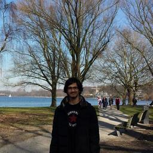

Mandar Chandorkar

Mandar is a PhD student in the Multiscale Dynamics group. His research domain is applied Mathematics in the areas of Machine Learning, Large Scale Inference, Physical Systems and Computer Science. He is currently pursuing his PhD in the topic "Machine Learning for Space Weather predictions".
Home Page
Carl Shneider
Carl is a postdoctoral researcher in the Multiscale Dynamics group.
His research is on the topic of Space Weather Forecasting using Machine Learning.
In particular, he makes use of heterogeneous data from the Solar and Heliospheric Observatory (SOHO) and Solar Dynamics Observatory (SDO) spacecrafts
and looks forward to using data from the Parker Solar Probe and Solar Orbiter missions.
He is also interested in Exoplanet Space Weather and its impact on Habitability.
He has experience in the fields of Astrophysics, Bioinformatics, and Theoretical Physics.
Home Page
LinkedIn
Rakesh Sharma
Rakesh is a post-doctoral researcher at the Multiscale Dynamics group at CWI Amsterdam. His research interests are in Uncertainty Quantification, Bayesian Parameter Estimation and Machine Learning applied to Space Weather and Computational Fluid Dynamics problems. He also has experience in numerical modelling with reduced order models for wind turbines.
Home Page
Andong Hu
Andong is a post-doctoral researcher at the Multiscale Dynamics group at CWI Amsterdam, funded by the AIDA project. His research interests are in Remote Sensing, Geodesy and Surveying, and ionospheric modelling using GNSS.
LinkedIn
Former students and postdocs
Amin Taziny
Summer 2019: Undergraduate
SOARS student on
Modeling electron auroral precicpiation with machine learning. Currently:
PhD student at CU/Boulder
Bala Poduval
Sep 2018 – Feb 2019: postdoc on H2020 AIDA project.Currently:
Postdoc at UNH
George Wilkie
Jan 2019 – Jun 201: postdoc on
Real-time forecasting of radiation belt electrons
Currently:
Research Physicist at Princeton Plasma Physics Lab (PPPL)
Casper Rutjes
PhD project on
numerical solution of the Poisson equation on adaptive mesh
Currently:
Competence Lead AI at Solid Professionals
Ashuthosh Agnihotri
PhD project on
sampling techniques for uncertainty quantification
Currently:
Research Geophysicist at Shell
Marina Gruet
PhD internship at CWI on
Machine Learning to forecast geomagnetic indices
Currently:
Data Scientist at Airbus (Toulouse, France)
Algo Carè
ERCIM fellow, 2017: postdoc on
Uncertainty Quantification project
Currently:
Research Fellow at University of Brescia, Italy
Emanuele Cazzola
Long-term postdoc visit on
neutral Vlasov model project.
Currently: Postdoc at Texas A&M University
Marleen Rijksen
Supervision of BSc thesis
Using Convolutional Neural Networks for Solar Wind Classification , University of Amsterdam
Currently:
Graduate Teaching Assistant at University of Amsterdam
Martijn Dortmond
Supervision of BSc thesis
Deep Learning classification of solar images using MXNet, University of Amsterdam
Simon Wing
Supervisor of the PhD thesis
Pathways for solar wind plasma and energy transfer to the Earth’s magnetosphere, Eindhoven University of Technology.
Currently:
Physicist at Applied Physics Laboratory, Johns Hopkins University.
Anissa Rebzani
Supervisor of MSc thesis Calibration of a Computer Simulation of the Earth's Radiation Belts (Ecole Normale Supérieure Cachan, France, Sep 2016).
Christopher Haynes
Cllaborator of PhD project
Simulations of Electron Kinetics in Solar Wind Turbulence, Queen Mary University of London
Currently:
Data Analyst for Simspace Solutions
Martina Giraudo
Co-supervisor of MSc thesis
Plasma-material interaction for magnetic fusion and space applications, Los Alamos National Lab
Currently:
Project Engineer at Thalis Alenia Space